Overview
The goal of this project was to simulate a cloth that behaves realistically in a real time rendering. This involved drawing the cloth as a mesh of point masses connected by springs to simulate the cloth structure, applying physical properties to the grid, dealing with collsions between the cloth and itself as well as with other objects, and finally implementing different shading methods to make the cloth realistically reflect light in the environment. The cloth simulation involves a lot of computation for each and every point mass that makes up the cloth; and it was interesting to learn how to deal with this--for example, in Part 4 where I implement self-collisions using a hash table data structure. It was cool to see how even after just applying a few physiscal properties to the point masses in part 2, the blank square we created in Part 1 transformed into a cloth that already folded and rippled realistically in real time.
Part 1: Masses and springs
In this part, I create a grid of point masses and connect them with springs based on three types of constraints that each simulate different dynamics of the cloth. STRUCTURAL constraint springs connect the point masses vertically and horizontally, while SHEARING constraints connect the masses along the diagonals and BENDING constraints connect masses that sit across from another point mass.
To create the grid, I first create all of the point masses by computing their position given the total width and height of the cloth as well as the number of point masses along each side. I then loop over all of the point masses and create spring objects connecting the current point mass to all other point masses with which it is possible to establish a spring (i.e. taking into account point masses on the edges of the cloth).
Below is the cloth visualized to show the different kind of constraints:
|
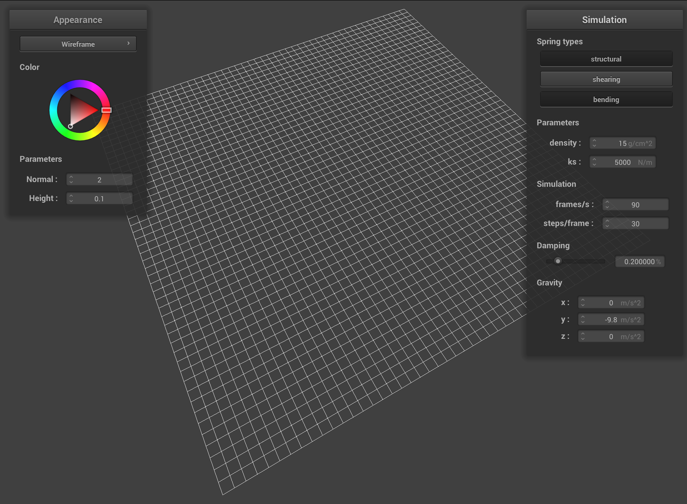
|
|
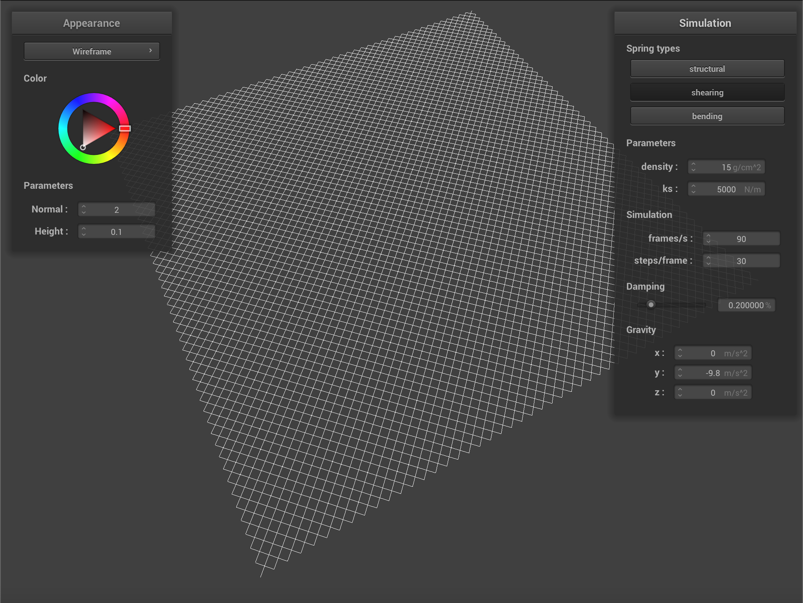
|
|
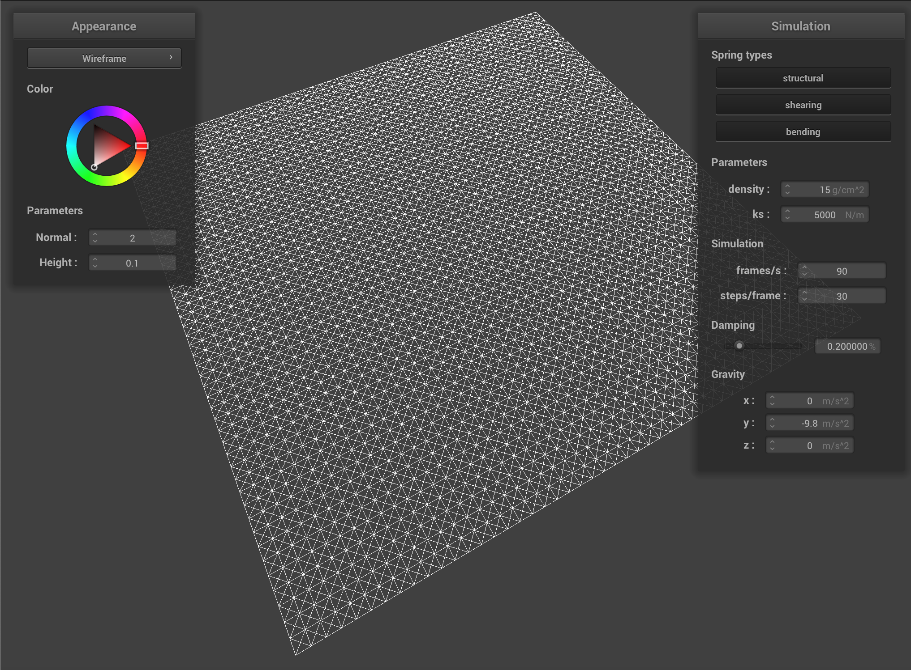
|
Part 2: Simulation via numerical integration
In this part, I added physical properties to the basic cloth mesh created in part 1. These consist basically of two kinds of forces, external forces that act on all of the point masses at once, and spring forces which act on pairs of point masses according to the spring constraints we defined in part 1. This all is implemented in the Cloth::simulate function.
The external forces (e.g. gravity) must be computed from a set of accelerations passed into the function as an array of 3D vectors. To compute the external forces from these acceleration vectors, I simply applied Newtown's Law
F = m * a
by multiplying each of the given vectors by the mass of the cloth computed in the function. Then, for each point mass, I add the sum of these force vectors to the point mass's forces parameter.
The spring forces are applied by adding a spring foce vector to each point mass's forces parameter. To calculate each spring force vector, for each spring, I subtract one of it's point mass's positions from the other to obtain a direction vector (which I normalize). Then, I multiply this vector by the magnitude of the spring force Fs calculated as follows:
Fs = ks * (|pm_a.position - pm_b.position| - spring_rest_length)
where ks is the spring constant passed into the function as a parameter. The magnitude of the spring force is greater the longer the spring is than its resting length. An equal and opposite spring force is applied to each of the point masses on either side of every spring.
Finally, after applying all of these forces to each point mass, I compute the new position of each point mass after the current timestep of the simulation using Verlet integration. It is essentially an approximation of the acceleration equation (x_t = x_t-1 + v*t + a*t^2) with a damping factor:
pm.new_position = pm.current_position + (1 - d) * (current_position - pm.last_position) + a_t * delta_t^2
where d is the damping factor, delta_t is the timestep duration, and a_t is the total acceleration computed from the total force using Newton's law once again.
After calculating the new position, we finally apply a constraint to make sure the point masses do not move too much, resulting in an unrealistic simulation. To do this, we loop over all of the springs after the point mass positions have been updated and make sure that their new length is not more than 10% of their resting length.
After implementing these physical properties, we can simulate what happens to the cloth in real time if it begins oriented horizontally with two corners pinned:
|
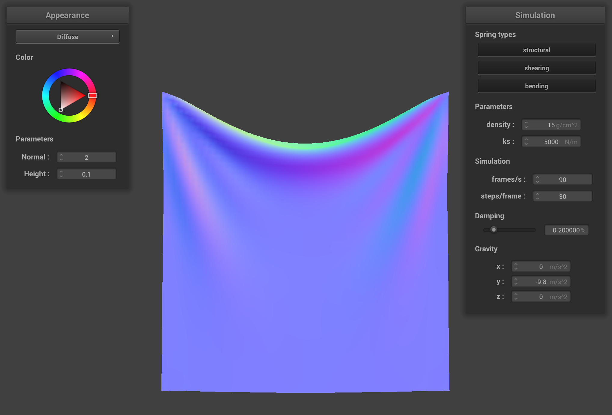
|
Below are images comparing what happens to the cloth as we change the spring constant ks, density, and damping factor respectively:
Altering ks
|
|
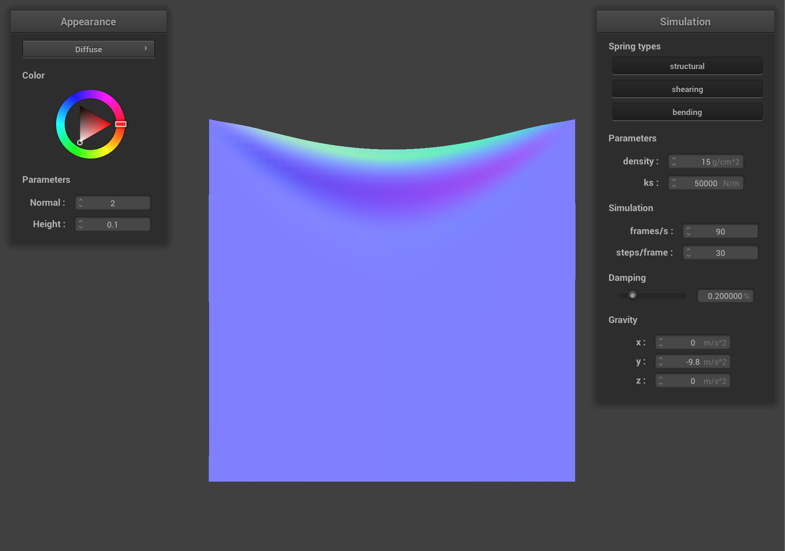
|
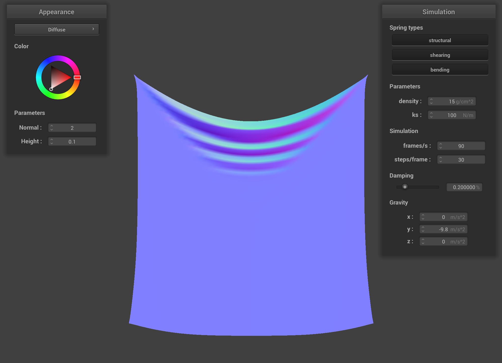
|
Above, we see that increasing the spring constant causes the cloth to look more flat while decreasing the spring constant causes it to have more folds. This is because a high spring constant means greater tension between point masses preventing them from deviating from one another too much, while a low spring constant results in a "looser" cloth.
Altering density
|
|
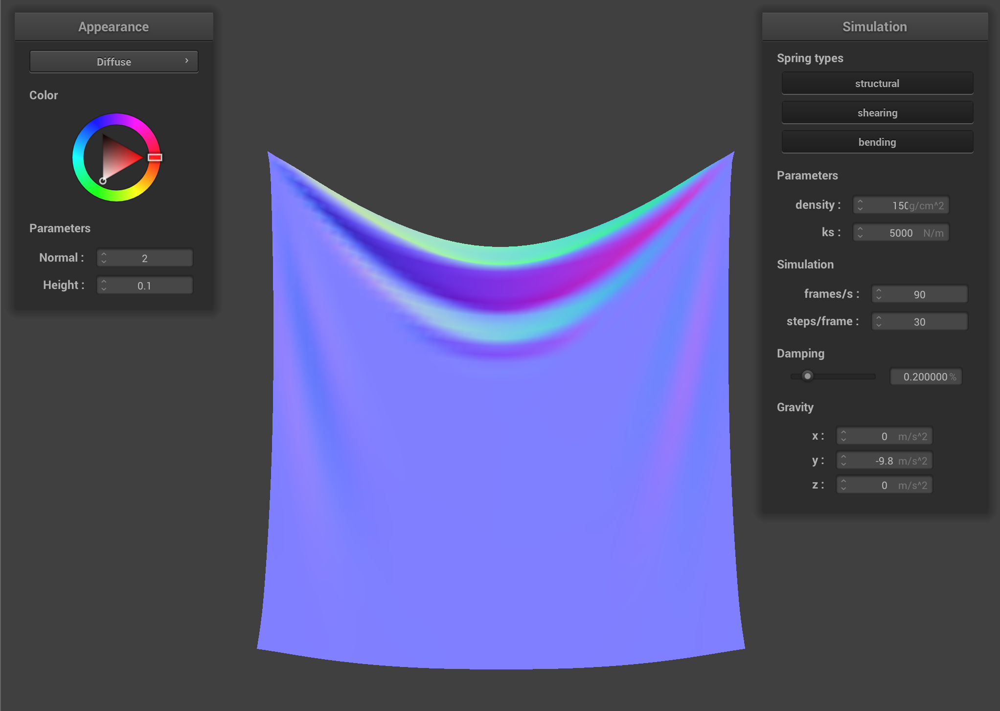
|
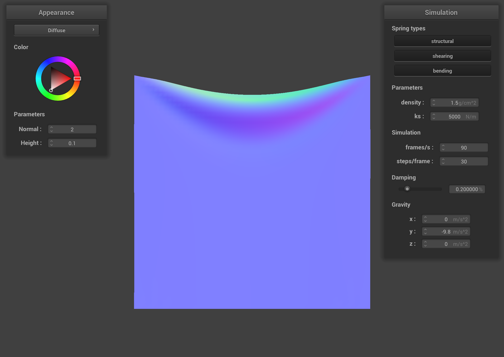
|
Here the effect is opposite from altering the spring constant: increasing the density results in more folds while decreasing the density results in a smoother cloth. This is because, with lower density, the mass is reduced and therefore the force on each point mass is lower, so that the point masses more more slowly and the tension from the spring forces is more influential on their movement. Increasing the density is like getting the cloth wet, while reducing it simulates a dry or even paper-like cloth.
Altering the damping factor
|
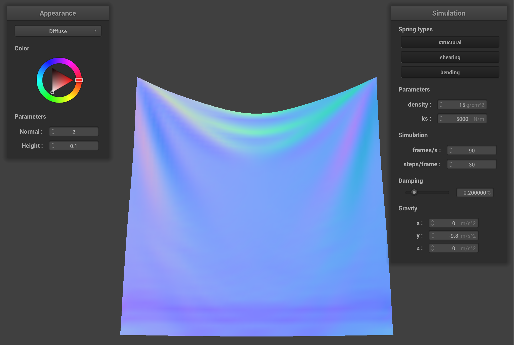
|
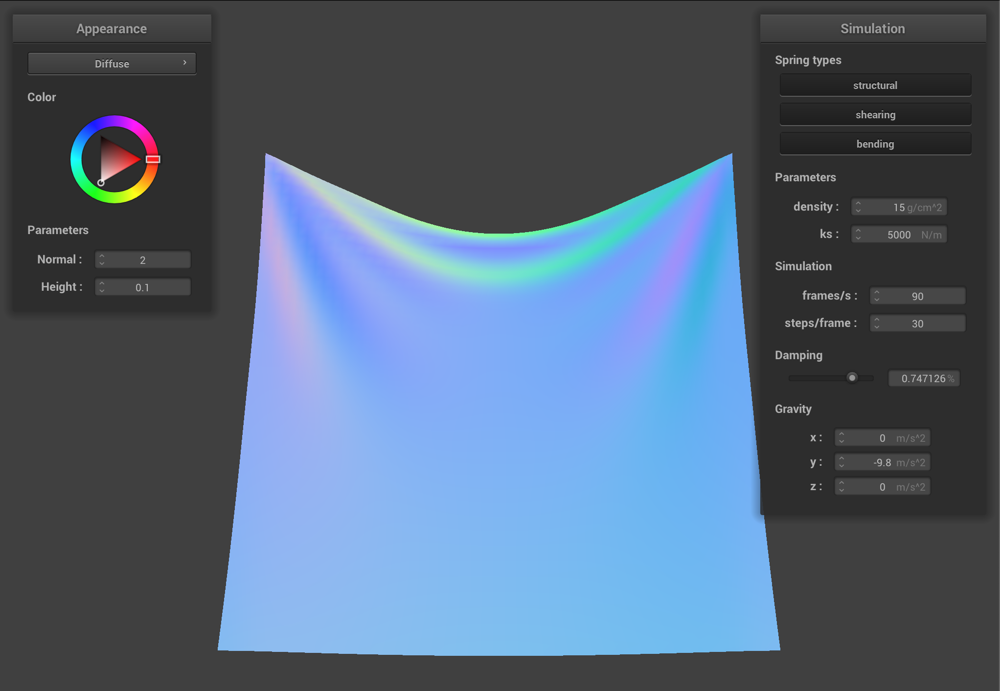
|
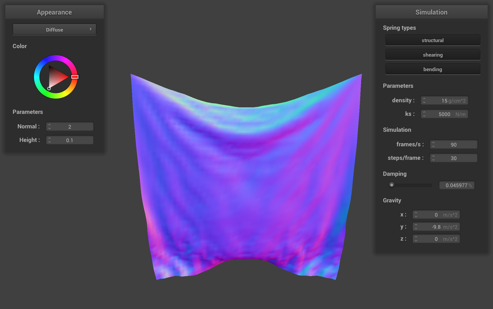
|
The damping factor controls how much a point mass's previous position will predict the next position in our Verlet integration equation above. If it is high, the previous position will strongly influence the next position, thus the point masses will fluctuate much between timesteps and our cloth will ripple a lot and fall quickly. If the damping factor is low, the previous position at each timestep has very little influence and the new position is determined almost entirely by the accelerations acting on each point. This means the point masses take a more streamlined path and the cloth falls much more slowly.
Part 3: Collisions with other objects
Now we want to simulate the effect of our cloth falling onto other objects. In this part, I implement two kinds of object collisions, that is collisions with spheres and planes. In both cases, we want to check to see if a point mass on the cloth has entered the space taken up by the object and adjust its position if so, in order to prevent the cloth from intersecting with the object or going through it.
Sphere collisions
To check for collisions with a sphere, I use the spherical coordinates formula
(x - cx)^2 + (y - cy)^2 + (z - cz)^2 <= r^2
where (x, y, z) are the coordinates of the point mass and (cx, cy, cz) are the coordinates of the center of the sphere, and r is the sphere's radius. The above condition will be true if the point mass is inside of the sphere. In this case, I compute the tangent point where the point mass should have first hit the sphere by tracing a line from the center of the sphere through the point mass to the edge of the sphere. Then I "correct" the point mass's position by adding an offset to the point mass's position from the previous timestep so that it lies just outside the edge of the sphere, using a friction coefficient as follows:
new_pos = pm.last_position + (correction_vec * (1 - friction))
I lastly added a check for collisions in the Cloth::simulate function I implemented in Part 2 so that after a point mass's new position is computed from the different forces acting on it, the position is adjusted in case it collided with a sphere.
Below is what the cloth looks like after falling onto a sphere using different values for the spring constant ks:
|
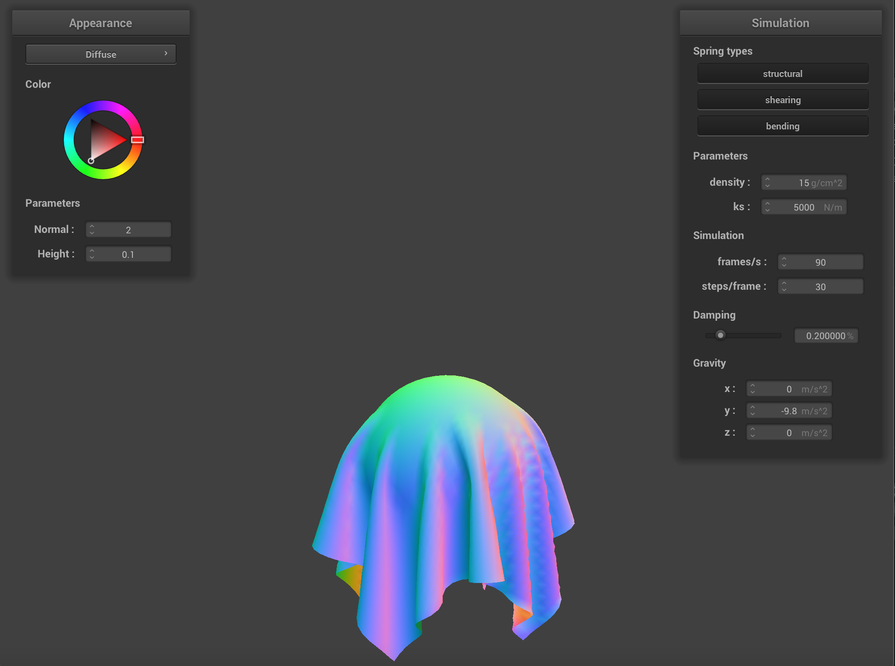
|
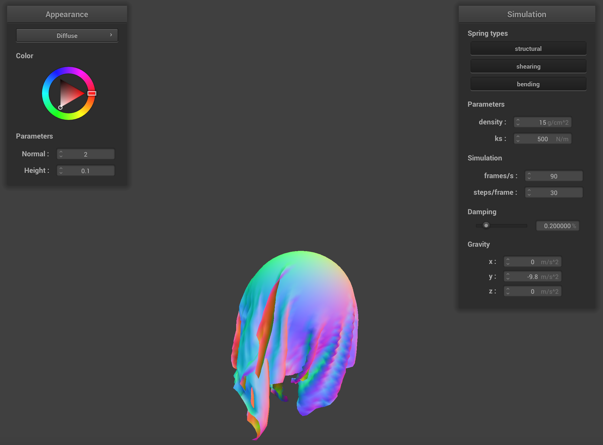
|
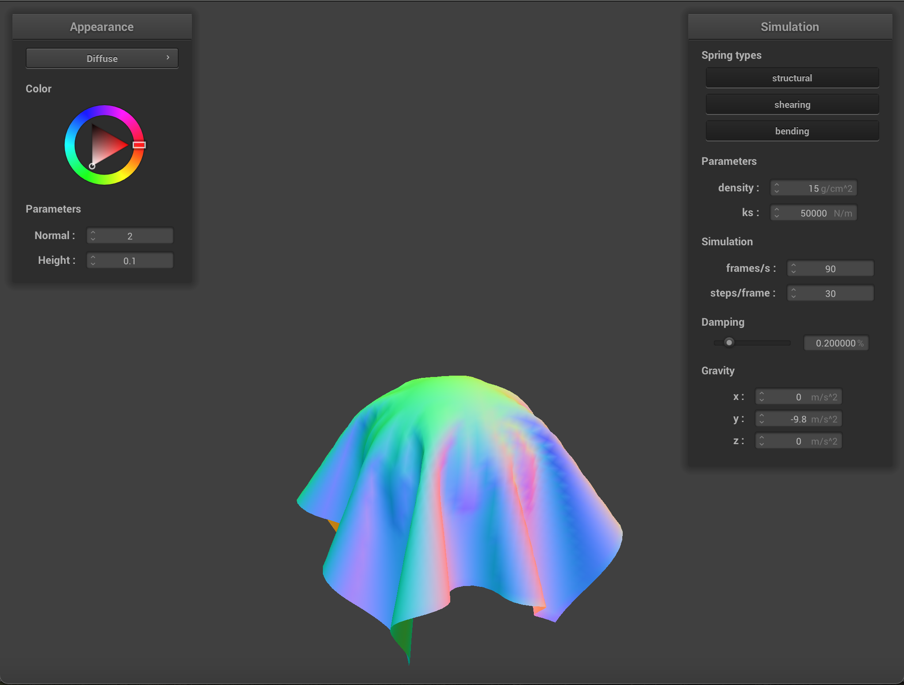
|
As we expect from our results in Part 2, changing the spring constant ks alters how the cloth drapes the sphere. The low ks cloth drapes it closely since the spring forces are lower, resulting in a more rippled cloth than clings to the sphere. The high ks cloth drapes the sphere more stiffly and has fewer folds that hang out wide, since the cloth's spring forces are pulling tightly on the point masses in the cloth itself.
Plane collisions
The plane collision similarly adjusts each point mass's position in the case of a collision; however checking for collisions with planes is different from the sphere case. Since a point mass cannot be "inside" a plane, we instead check to see if a point mass has crossed the plane over the course of a timestep.
To check for a cross over, I plug both the point mass's last position and current position into the following plane definition:
(p - p0) • N = 0
where p is the position (last or current) of the point mass, p0 is a point on the plane and N is the normal vector of the plane. If the results of the left side of the equation after plugging in both the last and current position have different signs, that means there has been a cross over. At this point, I apply a similar correction to the point mass's position as in the sphere collision case, by computing a correction vector based on the normal vector of the plane and adding that to the point mass's last position, again using a friction coefficient.
The cloth is not able to fall on top of a plane without passing through, as shown below:
|
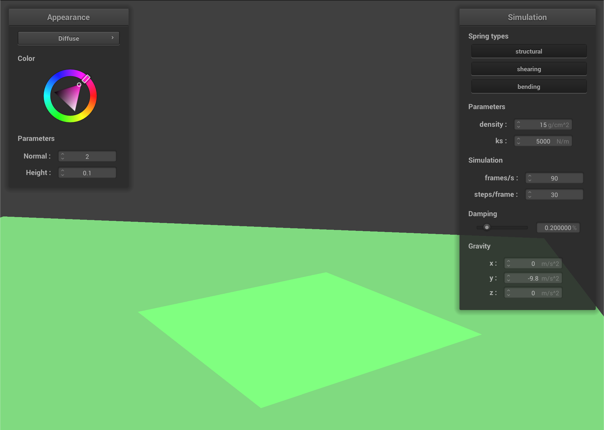
|
Part 4: Self-collisions
Until now, if the cloth were to fall onto itself it would simply go through itself and flatten out unrealistically. In this part, I implement self-collision by adjusting the position of point masses if they are too close to one another.
This could potentially require a lot of computing power, since we'd have to check every other point mass's position every time we want to update a point mass's position (this would take O(n^2) time). To avoid this, we can create a hash table that stores sets of point masses that lie within the same "box", each set being associated with a unique hash value. We compute the hash value based on the position of each point mass, truncated using the modulo (%) operator so that it falls into the nearest "box".
Below are images that show the cloth falling at different stages, with default parameters and adjusted ks and desity values:
|
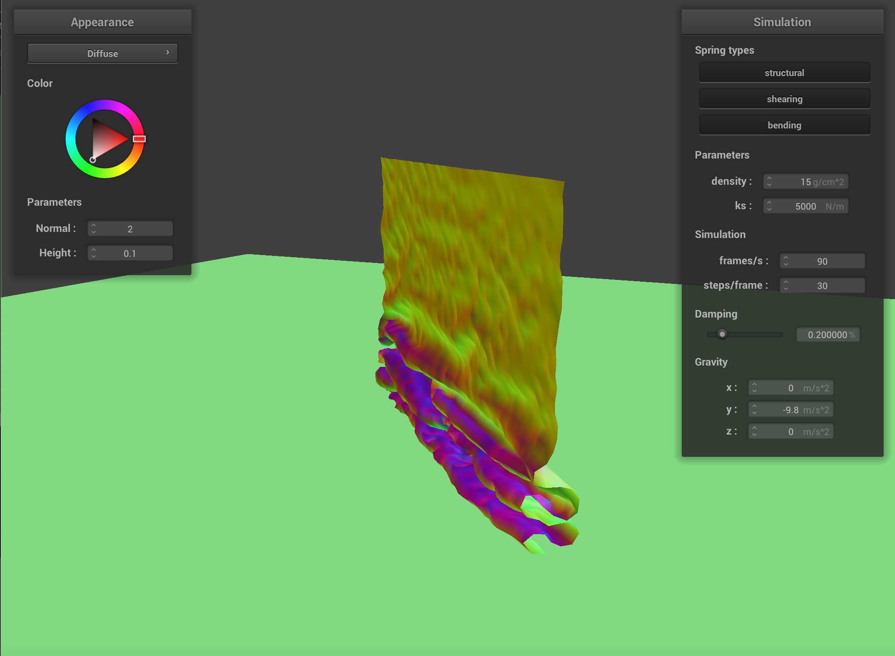
|
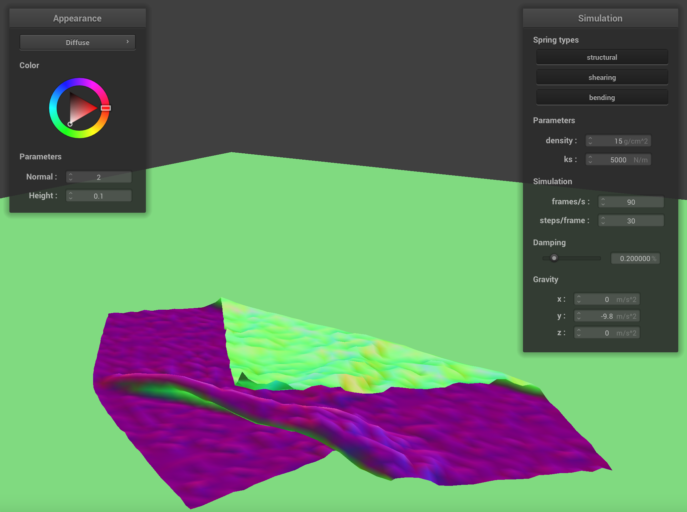
|
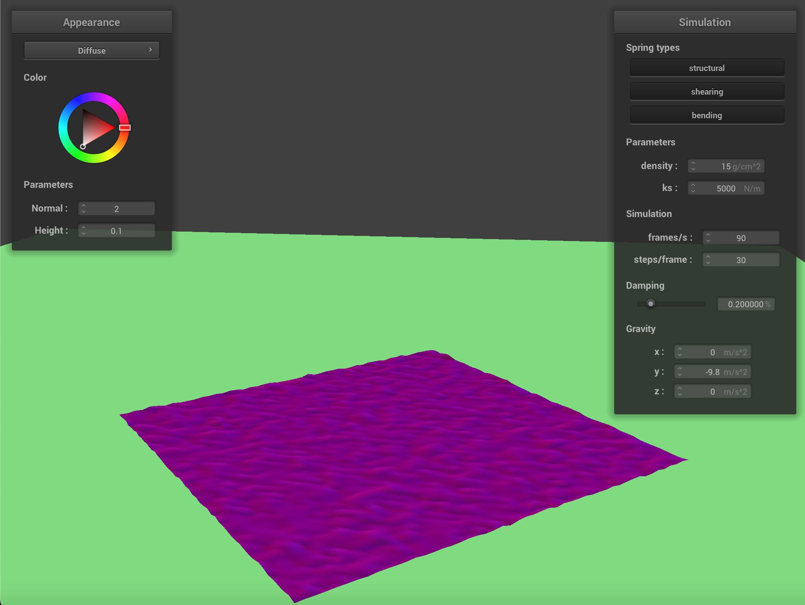
|
|
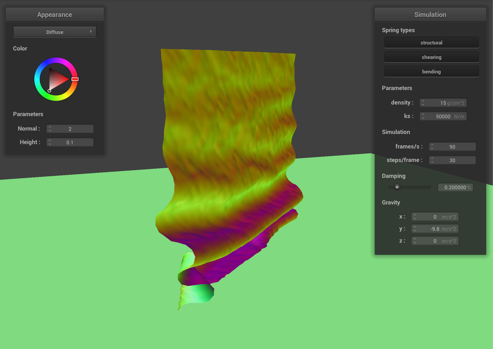
|
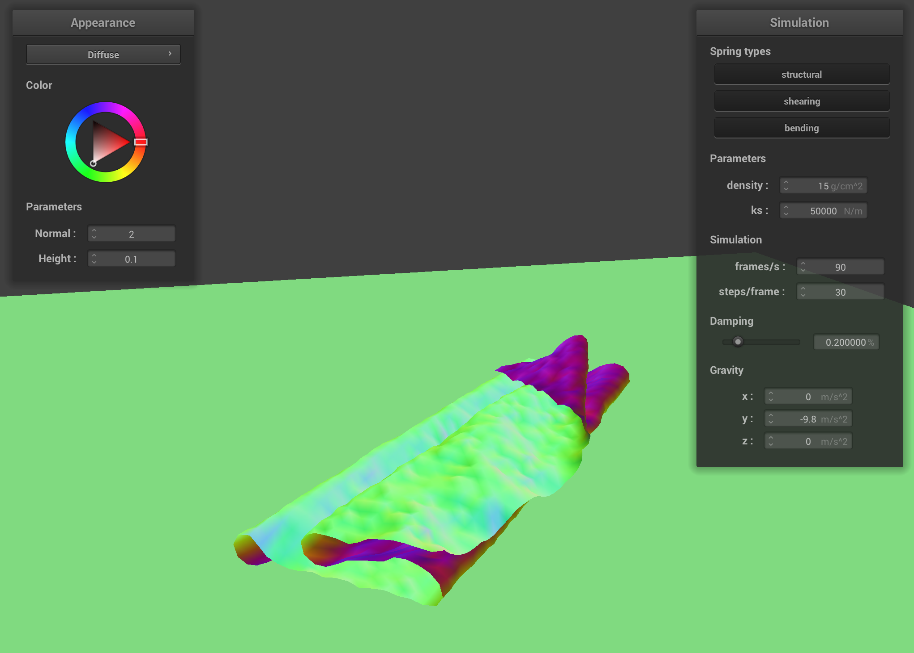
|
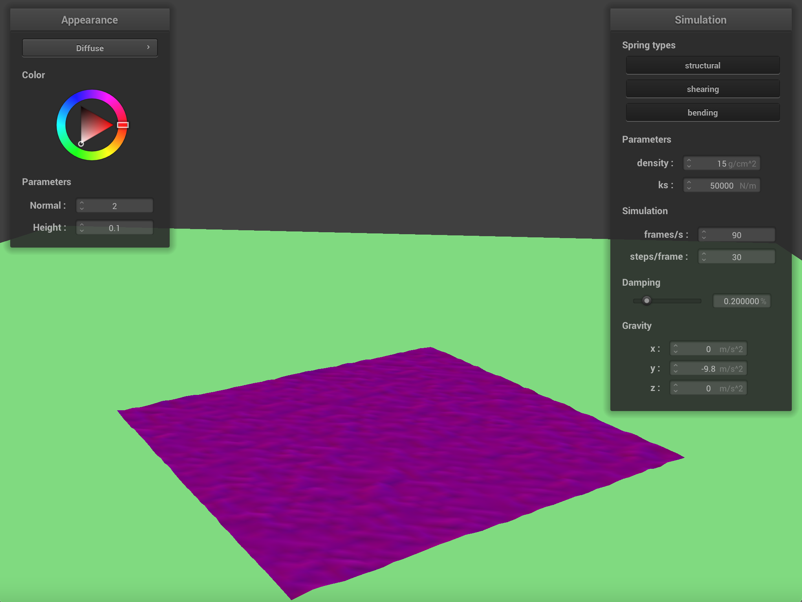
|
Increasing the spring constant ks value causes the cloth to fall more smoothly.

|
Increasing the density rather causes the cloth to shrively and move rapidly, and it never really reaches a resting state.